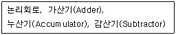
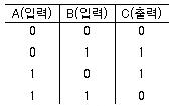
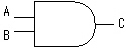
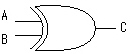
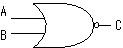
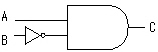
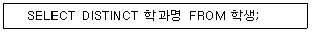
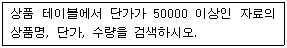
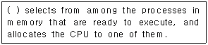
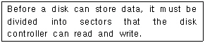

정보처리기능사 (2002-10-06 기출문제)
1과목: 전자 계산기 일반
1. Digital 형의 양을 바르게 표현한 것은?
- 온도의 변화
- 식물의 성장
- 연필의 개수
- 시간의 흐름
(정답률: 76%)

2. 다음 중 제일 큰 수는?
- 16진수 FF
- 2진수 11111111
- 10진수 325
- 8진수 377
(정답률: 54%)
3. 주기억장치에서 자료 표현의 최소 단위는?
- 블록(Block)
- 바이트(Byte)
- 셀(Cell)
- 레코드(RECORD)
(정답률: 76%)
4. 보기의 내용과 가장 관계 있는 장치는?

- 제어장치
- 기억장치
- 연산장치
- 입·출력장치
(정답률: 87%)
5. 2진수의 10101101을 10진수로 나타내면?
- 44
- 172
- 45
- 173
(정답률: 65%)
6. 자기디스크(Magnetic disk) 장치의 주요 구성 요소가 아닌 것은?
- 디스크(Disk)
- 액세스 아암(Access arm)
- IRG(Inter record gap)
- 읽기/쓰기 헤드(R/W Head)
(정답률: 57%)
7. 입, 출력 장치와 중앙연산 장치의 속도차로 인한 단점을 해결하는 장치는?
- 터미널(TERMINAL)장치
- 채널(CHANNEL)장치
- 콘솔(CONSOLE)장치
- 제어(CONTROL)장치
(정답률: 75%)
8. 8개의 bit 로 표현 가능한 정보의 최대 가지수는?
- 256
- 257
- 258
- 255
(정답률: 85%)
9. CPU에서 명령이 실행되는 순서를 제어하거나 특정 프로그램에 관련된 컴퓨터 시스템의 상태를 나타내고 유지하기 위한 제어 워드로서 실행중인 CPU의 상황을 나타내는 것은?
- PC
- MAR
- MBR
- PSW
(정답률: 72%)
10. 번지(address)로 지정된 저장위치(storage location)의 내용이 실제의 번지가 되는 주소지정번지는?
- 상대지정번지
- 간접지정번지
- 완전지정번지
- 절대지정번지
(정답률: 49%)
11. 모든 입력이 1일 때만 출력이 1이 되고, 입력이 하나라도 0이면 출력은 0이 되는 게이트[gate]는?
- NOT
- OR
- NAND
- AND
(정답률: 76%)
12. 플립플롭의 종류 중 입력 T가 0 일 경우에는 상태가 불변이고, T가 1 일 경우에는 보수가 출력되는 것은?
- RS 플립플롭
- JK 플립플롭
- D 플립플롭
- T 플립플롭
(정답률: 57%)
13. 다음 진리표에 해당하는 GATE는 어느 것인가?





(정답률: 76%)
14. 불(Boolean)대수의 기본식으로 옳지 않은 것은?
- x ·x = 0
- x + 1 = 1
- x + x = x
- x + 0 = x
(정답률: 67%)
15. 기계어의 Operand에는 주로 어떤 내용이 들어 있는가?
- OP-Code
- Data
- Resister 번호
- Address
(정답률: 62%)
16. 직접 번지 형식에 대한 설명으로 가장 적당한 것은?
- 번지부에 표현된 값을 특정값과 계산한 결과로 데이터를 지정하는 방법이다.
- 번지부의 비트수에 의하여 기억 용량에 제한을 받지 않는다.
- 번지부에 표현된 값이 연산할 실제 데이터이다.
- 지정하려는 위치를 번지부에서 직접 표현한 형식이다.
(정답률: 49%)
17. 플립플롭 회로가 전하를 축적시키는 방법으로 기억하였다가 자연 방전으로 인하여 전하가 소멸되는 것을 방지하기 위하여 일정한 시간 간격마다 다시 충전시켜 주어야하는 소자는?
- DRAM
- PROM
- SRAM
- EPROM
(정답률: 39%)
18. 고급언어나 코드화된 중간언어를 입력받아 목적프로그램 생성없이 직접 기계어를 생성, 실행해주는 프로그램은?
- 어셈블러(Assembler)
- 인터프리터(Interpreter)
- 컴파일러(Compiler)
- 크로스 컴파일러(Cross Compiler)
(정답률: 43%)
19. 마이크로프로세서의 구성에 해당하지 않는 것은?
- 출력장치
- 레지스터
- 제어장치
- 연산장치
(정답률: 55%)
20. 오퍼레이터(operator)가 시스템의 요구에 필요한 조치를 하는 경우라든가 타이머(timer)에 의해 특정 시간이 되면 하던 일을 중단하고 다른 업무를 하는 경우에 발생하는 인터럽트는?
- 입·출력 인터럽트
- 머신 체크 인터럽트
- 외부 인터럽트
- 프로그램 체크 인터럽트
(정답률: 39%)
2과목: 패키지 활용
21. 데이터베이스 시스템의 구성 요소로 가장 적절한 것은?
- 개념 스키마, 핵심 스키마, 구체적 스키마
- 외부 스키마, 핵심 스키마, 내부 스키마
- 개념 스키마, 구체적 스키마, 응용 스키마
- 외부 스키마, 개념 스키마, 내부 스키마
(정답률: 86%)
22. 데이터베이스에 관련된 용어 설명으로 옳지 않은 것은?
- 일관된 주제를 가진 데이터의 집합을 테이블이라 한다.
- 사원테이블에서 사원번호, 사원이름, 봉급과 같은 것을 속성이라 한다.
- 한 개의 테이블 내에서 단 한 개의 데이터를 찾아낼 수 있는 속성을 레코드라 한다.
- 두 개의 테이블에 속하는 원소들을 서로 연관시키기 위하여 하나의 쌍으로 연결하는 방법을 관계라 한다.
(정답률: 49%)
23. 기업체의 발표회나 각종 회의 등에서 빔 프로젝트 등을 이용하여 제품에 대한 소개나 회의 내용을 요약 정리하여 청중에게 효과적으로 전달하기 위한 도구를 의미하는 것은?
- 데이터베이스
- 프리젠테이션
- 스프레드시트
- 워드프로세서
(정답률: 84%)
24. 스프레드시트에서 기본 입력 단위를 무엇이라고 하는가?
- 툴 바
- 셀
- 블록
- 탭
(정답률: 86%)
25. 데이터베이스의 용어 중에서 가장 범위가 넓은 것부터 차례로 나열된 것은?
- 테이블 > 필드 > 레코드
- 테이블 > 레코드 > 필드
- 레코드 > 테이블 > 필드
- 필드 > 레코드 > 테이블
(정답률: 47%)
26. 스프레드시트 작업에서 반복되거나 복잡한 단계를 수행하는 작업을 일괄적으로 자동화시켜 처리하는 방법에 해당하는 것은?
- 필터
- 검색
- 정렬
- 매크로
(정답률: 86%)
27. 사원(사원번호, 이름) 테이블에서 "사원번호"가 "200" 인튜플을 삭제하는 SQL 문은?
- REMOVE TABLE 사원 WHERE 사원번호 = 200;
- DELETE, 사원번호, 이름 FROM 사원 WHERE 사원번호 = 200;
- DELETE FROM 사원 WHERE 사원번호 = 200;
- DROP TABLE 사원 WHERE 사원번호 = 200;
(정답률: 56%)
28. 다음 SQL 검색문의 의미로 가장 적절한 것은?

- 학생 테이블의 학과명을 모두 검색하라.
- 학생 테이블의 학과명을 중복되지 않게 모두 검색하라.
- 학생 테이블의 학과명 중에서 중복된 학과명은 모두 검색하라.
- 학생 테이블을 학과명 구별하지 말고 모두 검색하라.
(정답률: 71%)
29. 다음 질의를 SQL 문으로 옳게 표기한 것은?

- SELECT 상품명, 단가, 수량 FROM 상품 WHERE 단가 >= 50000;
- SELECT 상품 FROM 상품명, 단가, 수량 WHERE 단가 >= 50000;
- SELECT 상품명, 단가, 수량 FROM 상품 WHERE 수량 >= 50000;
- SELECT 상품명, 단가, 수량 FROM 상품 IF 단가 >= 50000;
(정답률: 49%)
30. SQL 문의 형식으로 적당하지 않은 것은?
- SELECT - FROM - WHERE
- UPDATE - FROM - WHERE
- INSERT - INTO - VALUES
- DELETE - FROM - WHERE
(정답률: 66%)
3과목: PC 운영 체제
31. 컴퓨터 시스템에서 사용자와 하드웨어 사이를 연결해주는 프로그램의 집합체는?
- 통신 프로그램
- 응용 프로그램
- 자료 관리 프로그램
- 운영체제
(정답률: 72%)
32. 페이지 대체 알고리즘에서 계수기를 두어 가장 오랫동안 참조되지 않은 페이지를 교체할 페이지로 선택하는 방법은?
- LFU
- LRU
- FIFO
- OPT
(정답률: 62%)
33. 도스(MS-DOS)에서 특정한 디렉토리 내의 모든 파일 및 하부 디렉토리까지 복사해주는 명령어는?
- SORT
- COPY
- XCOPY
- FDISK
(정답률: 67%)
34. 다중 프로그래밍 환경에서 하나 또는 그 이상의 프로세서가 가능하지 못한 특정 사건(Event)을 무한정 기다리는 상태를 무엇이라 하는가?
- Dead Lock
- Swapping
- Overlay
- Pipelining
(정답률: 72%)
35. 도스(MS-DOS)의 "DEL" 명령에서 삭제 전에 삭제 여부를 확인하는 방법은?
- C:\>DEL *.*/S
- C:\>DEL *.*/E
- C:\>DEL *.*/P
- C:\>DEL *.*/A
(정답률: 34%)
36. "윈도 98"에서 한번의 마우스 조작만으로 실행중인 응용 프로그램 사이를 오가며 작업할 수 있는 환경을 제공하는 것은?
- 내 컴퓨터
- 작업 표시줄
- 바탕화면
- 시작 버튼
(정답률: 81%)
37. "윈도 98"에서 새로운 하드웨어를 장착하고 시스템을 기동시키면 자동으로 하드웨어를 인식하고 실행하는 기능은?
- Interrupt 기능
- Auto & plug 기능
- Plug & play 기능
- Auto & play 기능
(정답률: 83%)
38. 도스(MS-DOS) 부팅시 반드시 필요한 시스템 파일에 해당하지 않는 것은?
- CONFIG.SYS
- MSDOS.SYS
- IO.SYS
- COMMAND.COM
(정답률: 60%)
39. 도스(MS-DOS)에서 아스키 코드로 작성된 파일의 내용을 화면에 출력시키는 명령은?
- PATH 명령
- RD 명령
- CD 명령
- TYPE 명령
(정답률: 49%)
40. "윈도 98"의 제어판에서 시동 디스크를 만들려면 어떤 항목을 선택하여야 되는가?
- 내게 필요한 옵션
- 시스템
- 사용자
- 프로그램 추가/제거
(정답률: 64%)
41. "윈도 98"에서 시작버튼을 누를 때 나오는 주(main)메뉴가 아닌 것은?
- 문서
- 도움말
- 제어판
- 프로그램
(정답률: 29%)
42. UNIX에서 사용되는 로그아웃 명령어로서 옳지 않은 것은?
- Ctrl-D
- end
- logout
- exit
(정답률: 38%)
43. 디스크에 저장된 목적프로그램을 읽어서 주기억장치에 올린 다음 수행시키는 역할을 담당하는 프로그램은?
- 로더
- 인터프리터
- 컴파일러
- 에디터
(정답률: 54%)
44. "윈도 98"의 탐색기에서 선택한 파일을 같은 드라이브의 다른 폴더로 복사하려고한다. 마우스로 끌어서 놓기를 할때 함께 누르는 키는?
- Shift
- Tab
- Alt
- Ctrl
(정답률: 54%)
45. 도스(MS-DOS)에서 파일을 읽기전용 속성으로 지정하는 명령어는?
- ATTRIB +R
- ATTRIB +A
- ATTRIB +H
- ATTRIB +V
(정답률: 72%)
46. "윈도 98"에서 현재 선택된 프로그램 창을 종료하는 단축키는?
- Alt + F1
- Shift + ESC
- Alt + F4
- Ctrl + ESC
(정답률: 83%)
47. "윈도 98"의 찾기 메뉴에서 지정할 수 있는 형식이 아닌 것은?
- 파일 속성
- 포함하는 문자열
- 파일 형식
- 파일의 크기
(정답률: 46%)
48. 다음 문장의 ( )안에 알맞은 내용은?

- Scheduler
- Spooler
- Cycle
- Buffer
(정답률: 51%)
49. 다음의 설명이 가장 적합한 것은?

- File store
- Backup
- Formatting
- Booting
(정답률: 38%)
50. UNIX에서 현재 시스템에 등록되어 있는 사용자의 정보를 조회하기 위한 명령어는?
- cp
- ping
- finger
- ls
(정답률: 35%)
4과목: 정보 통신 일반
51. 일반적으로 정보를 기억장치의 레지스터(register)로 전송하는 것을 무엇이라 하는가?
- 검색(search)
- 로오드(load)
- 엑세스(access)
- 스토아(store)
(정답률: 39%)
52. 회선 프로토콜(Line protocol)을 가장 잘 설명한 것은?
- 회선상에서 에러를 감지하기 위해 컴퓨터 측에 설치되어 있는 장치
- 회선에 접속되어 있는 단말장치를 컴퓨터가 제어하기 위한 프로그램
- 컴퓨터와 단말장치를 정확하게 결합시키고 정확하게 데이터를 송수신하기 위해 정해놓은 필요한 약속사항
- 회선의 전송효율을 높이기 위해 회선 사이에 코일과 콘덴서를 넣은 것
(정답률: 46%)
53. EIA RS-232C DTE 접속장치의 핀은 모두 몇 개인가?
- 25
- 8
- 16
- 32
(정답률: 46%)
54. 하드웨어(Hardware)적으로 에러(Error)를 검출하기 위하여 1개의 체크 비트(Check Bit)를 가지는데 이것을 무엇이라 하는가?
- 체크 디지트(Check Digit)
- 캐리 비트(Carry Bit)
- 바이너리 비트(Binary Bit)
- 패리티 비트(Parity Bit)
(정답률: 61%)
55. 음성과 비음성 정보통신서비스를 통합시킨 종합정보통신망에 해당하는 것은?
- ISTN
- VAN
- ISDN
- LAN
(정답률: 35%)
56. 다음 중 가장 최초로 쓰여진 통신선로로서 전주에 가설하여 이용했던 것은?
- 광통신케이블
- 가공 나선
- PE 국내케이블
- 동축케이블
(정답률: 30%)
57. 두개의 지점 사이에서 정보를 보내거나 받을 수는 있으나 동시에 정보를 주고받을 수 없는 통신회선은?
- Full Duplex
- High Duplex
- Simplex
- Half Duplex
(정답률: 54%)
58. 아날로그 가입자 정합 회로의 기능중 2선에서 4선으로 상호 변환하여 주는 것은?
- 정합(Matching)
- 트랜스(Trans)
- 하이브리드(Hybrid)
- 인덕턴스(Inductance)
(정답률: 31%)
59. 스테이션의 수가 30개인 복국지에서 국간 상호간을 망형으로 결선하려면 필요한 통신회선수는?
- 225
- 240
- 450
- 435
(정답률: 53%)
60. 텔레비젼을 정보매체로 이용하는 비디오텍스(Videotex)와 텔레텍스트(Teletext)에 대한 설명중 맞는 것은?
- 비디오텍스와 텔레텍스트 모두 전화선을 이용하여 정보를 전송한다.
- 비디오텍스는 전화선을 이용하고, 텔레텍스트는 방송 형태로 정보를 전송한다.
- 비디오텍스와 텔레텍스트 모두 방송형태로 정보를 전송한다.
- 비디오텍스는 방송형태로 전송하고, 텔레텍스트는 전화선을 이용한다.
(정답률: 35%)